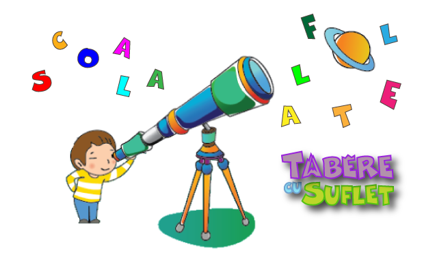

coala Altfel este un program dedicat unitatilor de invatamant (scoli, gradinite, licee etc). Asociatia Tabere cu Suflet este o familie deschisa tuturor copiilor, indiferent de posibilitatile materiale sau scoala de la care provin, astfel ca din primii ani am fost onorati sa colaboram cu diferite scoli si gradinite pe mai multe programe: Scoala Altfel, Recreatia Mare, Competitii si Tabere dedicate pentru Copii.
Conform Ministerului Educatiei, programul Scoala Altfel cuprinde activitati extracurriculare si extrascolare menite sa contribuie la "dezvoltarea competentelor de învăţare si a abilitătilor socio-emotionale". Durata este de o saptamana, in timpul anului scolar, iar perioada poate fi aleasa de catre fiecare Scoala in parte.
Pentru a sprijini programul Scoala Altfel, va propunem o serie de activitati educative si sportive, in natura, de una sau mai multe zile! Si pentru ca totul sa fie si mai placut, multe dintre activitati sunt ProBono, costurile fiind sustinute prin programul Edu WeCare:)
Mai multe informatii despre activitati, inclusiv preturile programelor, se gasesc in Brosura Scoala Altfel.
Mai multe oferte pentru Scoli si Gradinite:
| Scoala Verde | Oferte Scoli si Gradinite | Excelenta Tabere cu Suflet |
| Edu WeCare | Scoala Tabere cu Suflet | Competitii pentru Copii |